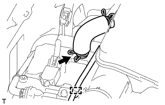
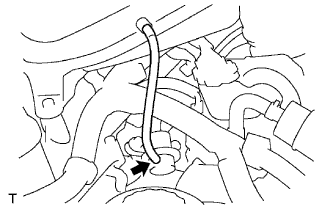
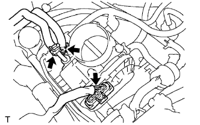
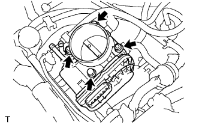

КОРПУС ДРОССЕЛЬНОЙ ЗАСЛОНКИ > СНЯТИЕ |
| 1. СНИМИТЕ НИЖНЮЮ НАКЛАДКУ ПЕРЕДНЕГО БАМПЕРА |
Освободите фиксатор, выверните 5 болтов и снимите нижнюю облицовку переднего бампера.
| 2. СНИМИТЕ ЗАЩИТУ КАРТЕРА ДВИГАТЕЛЯ № 1 В СБОРЕ |
 |
Выверните 4 болта.
Отсоедините защиту картера двигателя от кузова автомобиля, как показано на рисунке.
| 3. СЛЕЙТЕ ОХЛАЖДАЮЩУЮ ЖИДКОСТЬ ДВИГАТЕЛЯ |

| *1 | Пробка расширительного бачка | *2 | Пробка радиатора |
| *3 | Пробка сливного крана блока цилиндров | *4 | Пробка сливного крана радиатора |
 |
Установите виниловый шланг со стороны радиатора.
| *1 | Виниловый шланг |
 |
Установите виниловый шланг со стороны двигателя.
| *1 | Виниловый шланг |
Ослабьте пробку сливного крана радиатора.
Снимите пробку радиатора и слейте охлаждающую жидкость.
Ослабьте пробку сливного крана блока цилиндров и слейте охлаждающую жидкость из двигателя.
| 4. СНИМИТЕ ВОЗДУШНЫЙ ФИЛЬТР И ШЛАНГ |
 |
Открепите 3 зажима и отсоедините разъем датчика массового расхода воздуха.
 |
Отцепите 4 зажима.
Ослабьте хомут шланга и снимите воздушный фильтр и шланг.
| 5. СНИМИТЕ СОЕДИНИТЕЛЬ ВПУСКА ВОЗДУХА |
|  |
Отсоедините шланг вентиляции картера № 2.
Освободите зажим жгута проводов.
|  |
Отсоедините вакуумный шланг.
 |
Ослабьте хомут шланга.
Выверните 3 болта и снимите соединитель впуска воздуха.
| 6. СНИМИТЕ КОРПУС ДРОССЕЛЬНОЙ ЗАСЛОНКИ С ЭЛЕКТРОДВИГАТЕЛЕМ В СБОРЕ |
|  |
Отсоедините перепускной шланг охлаждающей жидкости.
Отсоедините перепускной шланг охлаждающей жидкости № 2.
Отсоедините датчик положения дроссельной заслонки и разъем электродвигателя привода дроссельной заслонки.
|  |
Выверните 2 болта, отверните 2 гайки и снимите корпус дроссельной заслонки с электродвигателем.
 |
Снимите прокладку с впускного коллектора.